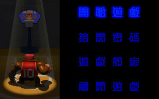
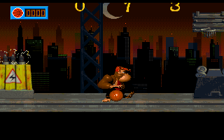

名稱：灌籃金剛 (King Kong 10，中文版) 簡介：第三波1996年出品的動作遊戲 [待補]。   保護：光碟，破解碼： SLAM1.EXE 00 74 0A B8 01 01 -- -- -- -- 或 7D E0 00 75 -- -- -- EB 74 18 BB 50 EB -- -- -- 備註：遊戲固定以C:\KK10.CD做為資訊存檔目錄。 操作： 上下左右 = 移動 Ctrl = 攻擊 右Shift = 跳躍

